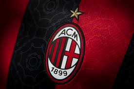

El A.C. Milan, fundado en 1899 en Milán, Italia, es uno de los clubes más prestigiosos del fútbol mundial. Con una rica historia de éxitos en la Serie A y la Liga de Campeones de la UEFA, el Milan es conocido por su estilo de juego elegante y su gran base de seguidores en todo el mundo.
El AC Milan, uno de los clubes de fútbol más ilustres del mundo, ha dejado una marca indeleble en la historia del deporte rey. Fundado en 1899 en Milán, Italia, el club ha sido un pilar tanto en la escena nacional como internacional del fútbol. Con una rica historia que abarca más de un siglo, el AC Milan ha acumulado innumerables títulos, trofeos y ha sido el hogar de algunos de los jugadores más talentosos que el mundo haya visto. El AC Milan ha sido reconocido por su estilo de juego distintivo, enfocado en la táctica, la técnica individual y la creatividad colectiva. Este enfoque ha llevado al club a la cima del fútbol europeo en varias ocasiones, con victorias memorables en competiciones como la Serie A italiana, la Copa de Italia y, más notablemente, la Liga de Campeones de la UEFA, donde el AC Milan ha acumulado un impresionante palmarés.
A lo largo de los años, el AC Milan ha sido el hogar de leyendas del fútbol como Paolo Maldini, Franco Baresi, Marco van Basten, Ruud Gullit, Andriy Shevchenko, entre otros. Estos jugadores no solo han dejado una marca indeleble en la historia del club, sino que también han contribuido a la rica herencia del fútbol mundial. Fuera del terreno de juego, el AC Milan ha sido un símbolo de pasión y devoción por parte de sus seguidores, conocidos como "rossoneri" debido a los colores característicos del club: rojo y negro. La base de aficionados del AC Milan se extiende por todo el mundo, creando una comunidad global unida por su amor compartido por el club. En resumen, el AC Milan no es solo un equipo de fútbol, es una institución venerada con una historia gloriosa, una identidad distintiva y una base de seguidores apasionados que han convertido al club en una fuerza omnipresente en el mundo del fútbol.
A.C Milan posee una plantilla con 26 jugadores(17 extranjeros y 14 internacionales), Posee un estadio llamado Giuseppe, con una capacidad de 80.000 personas fue abierto por primera vez en el 19 de septiembre de 1926 (97 años). El Milan actualmente se encuentra en 3er lugar del grupo F con 8 puntos a la par del PSG en la Champions League 23-24. Este perdió la Serie A frente a el Inter de Milan(2-1) el 22 de abril de 2024